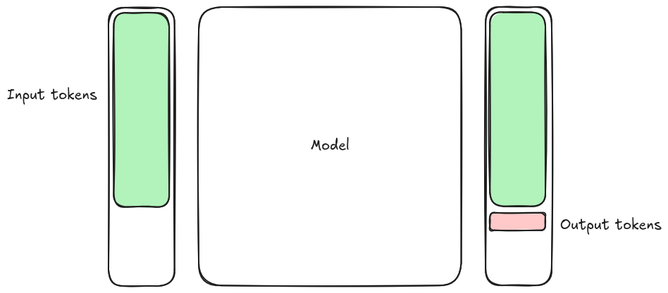

LESSON NAME¶
Intro
Prerequisites
FIXME
…
…
20 min |
filename |
Setup¶
0. Get LUMI access¶
1. Install dependencies¶
The project is managed with uv. Install uv if you don’t have it:
curl -LsSf https://astral.sh/uv/install.sh | sh
Create venv
uv sync
2. Get an Aitta access token¶
Go to https://aitta-auth.csc.fi/myToken (also reachable from https://aitta.csc.fi/ → Generate token).
Log in with your account.
Generate a token and copy it.
3. Export the token¶
The scripts read the token from the OPENAI_API_KEY environment variable.
export OPENAI_API_KEY=<your-aitta-token>
Run this in the same terminal session you use for the scripts.
1. Large Language Models¶
Questions
What is a large language model and how does it generate text?
Why is an LLM’s output variable, and why can it be confidently wrong?
Why do training cut-off dates matter in practice?
How do you call an LLM from Python?
Objectives
Explain next-token prediction and the role of tokens.
Distinguish pre-training from fine-tuning and instruction tuning, and understand why training cut-off dates matter.
Call an LLM through the AITTA inference service with the OpenAI client and stream a response.
A Large Language Model (LLM) is a type of artificial intelligence trained on vast amounts of text data to predict and generate human-like text.

At their core, these models learn statistical patterns in language: given a sequence of words (or better tokens: fragments of words, commas, and anything in text), they predict what comes next. In order to do so, text must first be converted into numerical representations, then transformer layers update those representations using the surrounding context, and finally they are converted back to text.
text
-> tokens
-> token IDs
-> embeddings
-> transformer blocks
-> output logits
-> next-token probabilities
-> tokens
-> text


A simplistic mental model for an LLM performing probabilistic next token prediction. Source: Simo Tuomisto¶
LLMs work because language (whether natural language or code) follows consistent patterns. The model doesn’t “understand” text the way humans do, but it has learned enough patterns to generate coherent and often meaningful output. This is especially effective for code, which is highly structured, so the model can generate syntactically correct and often semantically meaningful code.
Key insight
LLMs are sophisticated pattern-matching systems that can perform multi-step reasoning, but their reasoning is fallible and outputs must be verified. They excel at common patterns but can confidently produce incorrect output for novel or complex problems. Always verify their output.
Stochastic parrots
{attribution=”Emily M. Bender and Timnit Gebru”}
LM [Language Model] is a system for haphazardly stitching together sequences of linguistic forms it has observed in its vast training data, according to probabilistic information about how they combine, but without any reference to meaning: a stochastic parrot.
Practitioner’s perspective: Simon Willison
{attribution=”Simon Willison”}
My current favorite mental model is to think of them as an over-confident pair programming assistant who’s lightning fast at looking things up, can churn out relevant examples at a moment’s notice and can execute on tedious tasks without complaint.
Over-confident is important. They’ll absolutely make mistakes, sometimes subtle, sometimes huge. These mistakes can be deeply inhuman, if a human collaborator hallucinated a non-existent library or method you would instantly lose trust in them.
Don’t fall into the trap of anthropomorphizing LLMs and assuming that failures which would discredit a human should discredit the machine in the same way.”
How are LLMs trained?¶
Training an LLM involves two main phases:
1. Pre-training¶
The model is exposed to massive amounts of text (and often code) to learn general patterns of language:
Model |
Training Data Size |
Languages |
|---|---|---|
Poro 34B |
~1 trillion tokens |
Finnish, English, code |
Gemma |
Undisclosed (Gemma 2: ~13 trillion tokens) |
Multilingual + code |
GPT-OSS |
Undisclosed |
Multilingual + code |
GPT-5.x |
Undisclosed |
Multilingual + code |
During pre-training, the model learns:
Grammar and structure of natural language (and the syntax of programming languages)
Common patterns, idioms, and factual associations
Relationships between concepts across a document
How different parts of a text (or codebase) relate to each other
The size of typical datasets also implies that training a model from scratch is a heavy commitment. It is expensive, both in terms of time (person-hours) and compute, which in turn means that very few actors do this and most users rely on such pre-trained “frontier” models for their specific use cases.
In our course we use the AITTA inference service that serves such frontier models via an API. We just need to implement the API client and then can use such models in our Python code.
2. Fine-tuning and instruction tuning¶
After pre-training, models are often further refined:
Fine-tuning: Training on specific domains (e.g., scientific Python)
Instruction tuning: Teaching the model to follow human instructions
RLHF (Reinforcement Learning from Human Feedback): Aligning outputs with human preferences
In our exercise we use an instruction-tuned model that lets us send a prompt as a message with a role (messages=[{"role": "user", "content": prompt}]) and get a helpful response.
Training cut-off dates matter¶
A crucial characteristic of any model is its training cut-off date, the date at which training data collection stopped. This has direct practical implications, which are especially visible in coding:
Impact |
Example |
|---|---|
Unknown libraries |
A library released after the cut-off won’t be suggested |
Breaking changes |
Major API changes since cut-off produce outdated suggestions |
Deprecated patterns |
Old syntax or methods may still be recommended |
Security updates |
Known vulnerabilities patched after cut-off won’t be reflected |
Key insight
The training cut-off date is sometimes not known. With chatbots, you can try asking the chatbot. What makes it even more challenging is that some AI systems also have “tools” attached to them, so they can fetch some up-to-date content, while mixing with what they have seen during their training. This can be a total success… or total disaster.
Pick a stable library, even if it is a little bit older: Choose Boring Technology.
Practical implications:
Check model documentation for training cut-off dates
Be skeptical of suggestions for rapidly-evolving libraries
Provide recent documentation or examples in prompts when using newer tools
Consider library stability as a factor in dependencies choices
Exercise 1.1: Use an LLM¶
To use an LLM in our code, we need to create a client. Even though the LLM provider in our case is AITTA, an inference service that runs LLMs on the LUMI supercomputer, we use the OpenAI Python library. AITTA implements a subset of the OpenAI API, which has become a de facto standard for LLM APIs. This means we can easily switch to any other provider that implements the same API.
We use AsyncOpenAI, the asynchronous version of the client, which works with asyncio. asyncio is Python’s built-in library for running many tasks concurrently in a single program, so that while one task waits (for example, for an LLM to respond), others can keep working instead of sitting idle. This lets us send multiple requests to the LLM at the same time instead of one after another. We don’t need this yet, but it will be useful in later exercises.
The base_url is set here to use AITTA, but it can be changed. For example, you can set it to http://localhost:8000/v1 when running vLLM locally, or to https://api.openai.com/v1 for OpenAI.
The API key authenticates you to the service. Keep it secret and never share it with anyone. See the setup section for how to obtain one for AITTA.
import asyncio
import sys
import os
from dotenv import load_dotenv
from openai import AsyncOpenAI
load_dotenv()
client = AsyncOpenAI(
api_key=os.getenv("OPENAI_API_KEY", default="EMPTY"),
base_url=os.getenv("MODEL_BASE_URL", "https://aitta-api.csc.fi/openai/v1"),
)
Now we can use our client to send the prompt "Where does 'hello world' come from?" to the model LumiOpen/Poro-34B-chat.
Setting stream=True tells the API to send the response in small pieces, called tokens, as soon as the model produces them, rather than waiting until the whole answer is finished.
We receive these pieces one at a time in the async for loop. Each event contains a delta with only the text that is new since the previous event. Printing with end="" joins the pieces into continuous text, and flush=True makes each one appear on screen immediately instead of being buffered.
DEFAULT_PROMPT = "Where does 'hello world' come from?"
async def main(prompt: str):
stream = await client.chat.completions.create(
messages=[{"role": "user", "content": prompt}],
model=os.getenv("MODEL_NAME", "google/gemma-4-31b-it"),
stream=True,
)
async for event in stream:
token = event.choices[0].delta.content
if token:
print(token, end="", flush=True)
print()
You can run it yourself with the following command. Make sure you have set up your API key correctly as described in the setup section.
uv run 01_hello_world.py
You should receive a reply to your prompt, but note that the exact reply can change because LLMs are stochastic. Here is an example that we got.
The tradition of writing a "Hello, World!" program is widely attributed to **Brian Kernighan**, a computer scientist at Bell Labs.
While many people associate it with the C programming language, its origin happened in two stages...
Try changing the prompt by passing a new prompt to the script with:
uv run 01_hello_world.py "Where does the name Python come from?"
This is a bit clumsy, so in the next part we will make it interactive, letting you type new prompts directly from the command line without needing to restart the script.
Summary¶
A large language model predicts text one token at a time. Text is split into tokens, converted into numerical representations, passed through transformer blocks that use the surrounding context, and turned back into probabilities for the next token. Because this process is probabilistic, the output is stochastic and pattern-based: it can be wrong even when it looks confident, so you should always verify what the model produces.
Models are built in two phases. Pre-training exposes the model to large amounts of text (and code) so it learns general patterns, and fine-tuning and instruction tuning then teach it to follow human instructions. Training always stops at a cut-off date, so a model may not know about newer libraries or recent changes.
In Exercise 1.1 we used such a model in practice. We created an AsyncOpenAI
client pointed at the AITTA inference service, sent a prompt to
LumiOpen/Poro-34B-chat, and streamed the reply token by token. Because the
output is stochastic, the exact reply changes each time you run it.
2. Basics of AI agents¶
Questions
What do we mean by an AI agent, and how is it more than just calling an LLM?
Why can’t a plain language model tell you the time or remember what you just said?
When an agent has several tools, how does it decide which one to use?
What happens when tools are “chained” together?
Objectives
Understand what an AI agent is and the role of the harness and tools.
Build up an agent step by step: adding a tool, conversation history, and a second tool.
See why tools and message history are needed by running the example scripts.
Defining agents¶
The term agent is quite overloaded these days. It is often used to refer to any application using LLMs in some capacity, even one as simple as our “hello world” program from the previous section. In this course, we understand an AI agent to mean a computer program that leverages an LLM to interact with the program’s environment (a harness in AI jargon) in order to accomplish some task. This is enabled by outfitting the harness with tools, which may be implemented as, e.g., Python functions.
At the time of writing these materials, there are many frameworks for building AI agents, each providing roughly the same features. This course uses Pydantic AI. Other popular options include LangChain and OpenAI Agents SDK. The code block below shows how one would use Pydantic AI to build an agent on top of the OpenAI client used in the previous section.
client = AsyncOpenAI(
api_key=os.getenv("OPENAI_API_KEY", default="EMPTY"),
base_url=os.getenv("MODEL_BASE_URL", "https://aitta-api.csc.fi/openai/v1"),
)
model = OpenAIChatModel(
os.getenv("MODEL_NAME", "google/gemma-4-31b-it"),
provider=OpenAIProvider(openai_client=client),
)
agent = Agent(model)
Here Pydantic AI’s Agent wraps the same AITTA-hosted client we built in the
previous episode, turning it into an agent that we can later extend with tools
and conversation history.
We run the agent in a loop as you can see below. It is constantly waiting for new prompts or processing prompts you just sent.
async def main():
history = []
while True:
try:
prompt = input("You: ")
except (EOFError, KeyboardInterrupt):
break
if prompt.strip().lower() in {"quit", "exit", ""}:
break
async with agent.run_stream(prompt, message_history=history) as result:
print("Agent: ", end="")
async for text in result.stream_text(delta=True):
print(text, end="", flush=True)
Discussion
So where is the compute happening? Which part of this program runs on your own machine, and which part runs elsewhere?
Exercise 2.1: Ask the agent for the time¶
We can try to use the agent with the following command.
uv run 02_time.py
Try asking the agent about the time and observe the result:
What is the time currently in Helsinki?
Discussion
What do you see? Is this surprising to you?
The agent most likely made up a time or refused to answer. An LLM only generates text and has no way to look up the current time on its own. To give it that ability, we provide tools.
Tools¶
The previous section introduced the concept of a language model as a text generation algorithm. The role of an LLM in an AI agent is to guide the harness program’s execution, so that it can leverage the provided tools in a useful manner. This is accomplished by extracting pre-determined patterns from text generated by the LLM. An inference server running the model, such as vLLM or SGLang, parses tool calls from the LLM’s output and returns a structured response to the harness.
<bos><|turn>system
You are a helpful assistant.<turn|>
<|turn>user
What's the temperature in London?<turn|>
<|turn>model
<|tool_call>call:get_current_weather{location:<|"|>London<|"|>}<tool_call|><|tool_response>
[
{
"role": "system",
"content": "You are a helpful assistant."
},
{
"role": "user",
"content": "What's the temperature in London?"
},
{
"role": "assistant",
"tool_calls": [
{
"function": {
"name": "get_current_weather",
"arguments": {
"location": "London"
}
}
}
]
}
]
When a user inputs a message to a harness with access to tools, a list of available tools is passed along with the message to the inference server running the model. If the LLM generates a response that includes a tool call, response generation is paused, and the inference server returns a tool call. The harness runs the tool and sends the result back to the inference server. The server then appends the result to the generated text and the model resumes generation.
Below you can see the tool get_current_datetime that returns the current time given a timezone. While the LLM has no access to the current time, your computer knows the time very well. This tool simply returns the time of your computer to the agent. Note that the tool’s docstring tells the agent when to use it.
@agent.tool_plain
def get_current_datetime(timezone: str | None = None) -> str:
"""Get the current date and time.
Args:
timezone: IANA timezone name, e.g. 'Europe/Stockholm'. Omit for the user's local time.
"""
logfire.info("tool called with {timezone=}", timezone=timezone)
tz = ZoneInfo(timezone) if timezone else None
now = datetime.datetime.now(tz).astimezone(tz)
result = now.strftime("%Y-%m-%d %H:%M:%S %Z (UTC%z)")
logfire.info("tool result: {result}", result=result)
return result
Discussion
What other tools could you imagine?
Exercise 2.2: Enable a tool¶
We can try the agent with the get_current_datetime tool enabled by passing --enable_tools. The agent will call this tool if it seems appropriate for replying to your prompt.
uv run 02_time.py --enable_tools
Try asking the agent again about the time and observe the result (note that you can see potential tool calls in the log):
What is the time currently in Helsinki?
This works now! However, what about asking multiple things that build on top of each other?
The instructor lives in Helsinki.
Followed by the second prompt:
What is the time currently in the city that the instructor lives in?
You will notice that this is not possible for the LLM to answer. We will now explore why.
Discussion
Why do you think the agent could not answer the second question?
History¶
LLMs are stateless, which means that a given input does not affect how consecutive inputs are processed. A practical consequence of this is that when you input a message to a model, it does not remember previous messages. In order to hold a conversation with a model, every new input must include all previous inputs and responses. While chat history can be naïvely implemented by manually appending messages to a list, pre-made harnesses typically take care of this on behalf of the programmer.
async def main():
history = []
while True:
try:
prompt = input("You: ")
except (EOFError, KeyboardInterrupt):
break
if prompt.strip().lower() in {"quit", "exit", ""}:
break
async with agent.run_stream(prompt, message_history=history) as result:
print("Agent: ", end="")
async for text in result.stream_text(delta=True):
print(text, end="", flush=True)
print()
history = result.all_messages() if args.enable_history else []
Exercise 2.3: Enable conversation history¶
We can try the agent by additionally enabling the history with --enable_history.
uv run 02_time.py --enable_tools --enable_history
This example will now work:
The instructor lives in Helsinki.
Followed by the second prompt:
What is the time currently in the city that the instructor lives in?
Now the LLM should reply with the current time in Helsinki.
Multiple tools and tool chaining¶
An agent is not limited to a single tool. We can register several tools on the same agent, and the LLM decides which one to call for a given prompt. Tools can also be chained: the result of one tool becomes the input to another.
The 03_flight_search.py example adds a search_flights tool alongside
get_current_datetime. The flight search only understands concrete dates, so
its docstring instructs the agent to resolve relative dates like “tomorrow” by
calling get_current_datetime first and then passing the resolved date to
search_flights.
See the search_flights tool below. It is quite complicated, but in the end it just allows access to a flight database. The results from that database can be filtered. If you are interested, you can find the full mock flight database under data/flights.csv.
@agent.tool_plain
def search_flights(
origin: str | None = None,
destination: str | None = None,
date: str | None = None,
) -> str:
"""Search the weekly flight schedule. Flights recur on fixed weekdays.
Args:
origin: departure city, e.g. 'Helsinki'. Omit to match any.
destination: arrival city, e.g. 'Stockholm'. Omit to match any.
date: travel date 'YYYY-MM-DD'; returns flights on that weekday. Resolve
relative dates like 'tomorrow' with get_current_datetime first.
"""
logfire.info("tool called with {origin=} {destination=} {date=}", origin=origin, destination=destination, date=date)
flights = pd.read_csv(Path(__file__).parent / "data" / "flights.csv")
if origin:
flights = flights[flights["origin"].str.lower() == origin.lower()]
if destination:
flights = flights[flights["destination"].str.lower() == destination.lower()]
if date:
try:
weekday = WEEKDAYS[datetime.date.fromisoformat(date).weekday()]
except ValueError:
return f"Invalid date {date!r}, expected 'YYYY-MM-DD'."
flights = flights[flights["weekdays"].str.contains(weekday)]
if flights.empty:
result = "No matching flights found."
else:
result = flights.head(20).to_string(index=False)
logfire.info("tool result: {result}", result=result)
return result
Discussion
Before running it, which tools do you expect the agent to call, and in what order?
Exercise 2.4: Chain two tools¶
Run the flight search agent, which has both tools enabled:
uv run 03_flight_search.py
Ask a question that depends on today’s date, and watch the log to see the agent
call get_current_datetime first and then search_flights:
Are there any flights from Paris to Rome tomorrow?
The agent should have returned a list of flights.
Summary¶
An AI agent is a program that uses an LLM to decide how to interact with its environment (the harness) through tools. In this episode we used Pydantic AI to wrap the model from the previous episode into an agent.
Because an LLM only generates text, tools are necessary to do more useful things: the harness adds the available tools to the prompt, detects when the model’s output is a tool call, runs the tool, and returns the result to the model. A tool’s docstring tells the agent when and how to use it.
LLMs are stateless, so to hold a conversation the harness must send the full message history with every request. With tools and history in place, the agent can chain several tool calls together and build on earlier turns, for example resolving a relative date before searching for flights.
3. Model Context Protocol¶
In the previous sections, we have implemented our tools using Pydantic AI’s
@agent.tool_plain decorator. Wrapping Python functions as tools using the harness
framework is straightforward, but comes with limitations. Suppose you are very happy
with your get_current_datetime tool, and would like to reuse it in another agent. To
do this, you would need to either import or simply copy the function from your existing
code. This further requires that you can edit the other agent’s source code and that the
agent is written in the same language as the tools.
The Model Context Protocol standard was developed to enable harnesses (hosts in MCP terminology) to access external resources provided by an MCP server. The MCP host uses an MCP client to communicate with the server. This means that the harness only needs to implement an MCP client to integrate with servers that can be deployed locally or remotely in a variety of programming languages. This is especially useful if you are using a pre-existing harness, such as a coding agent like Claude Code or Codex. These typically provide an MCP client through which you can provide them with custom tools.
from pydantic_ai import Agent
agent = Agent(model)
@agent.tool_plain
def get_current_datetime(timezone: str | None = None) -> str:
"""Get the current date and time.
Args:
timezone: IANA timezone name, e.g. 'Europe/Stockholm'. Omit for the user's local time.
"""
logfire.info("tool called with {timezone=}", timezone=timezone)
tz = ZoneInfo(timezone) if timezone else None
now = datetime.datetime.now(tz).astimezone(tz)
result = now.strftime("%Y-%m-%d %H:%M:%S %Z (UTC%z)")
logfire.info("tool result: {result}", result=result)
return result
from mcp.server import MCPServer
mcp = MCPServer("Demo")
@mcp.tool()
def get_current_datetime(timezone: str | None = None) -> str:
"""Get the current date and time.
Args:
timezone: IANA timezone name, e.g. 'Europe/Stockholm'. Omit for the user's local time.
"""
logfire.info("tool called with {timezone=}", timezone=timezone)
tz = ZoneInfo(timezone) if timezone else None
now = datetime.datetime.now(tz).astimezone(tz)
result = now.strftime("%Y-%m-%d %H:%M:%S %Z (UTC%z)")
logfire.info("tool result: {result}", result=result)
return result
Exercise 3.1
Create your own tool for booking flights.
4. Skills¶
Give a motivation for skills
Explain how they work
What gets loaded in
---
name: travel-policy
description: Corporate travel policy to apply when searching for or recommending flights (cost-per-km cap, aircraft restrictions, and the user's time-of-day preference).
---
# Corporate Travel Policy
Rules:
1. Cost per km must not exceed 0.25 EUR.
2. Wide aircraft are prohibited below 1000 km.
3. Prefer the cheapest compliant option.
4. If no compliant option exists, recommend the least severe violation.
5. When searching for flights, always ask the user whether they prefer morning or afternoon flights — unless that preference is already known from the conversation history, in which case do not ask again and apply it silently.
How to include the skills file into the framework
https://github.com/agentskills/agentskills
How do skills compare to related ideas like system prompts, MCP, tool calls,
Discussion: What would be skills that you could imagine?
Instructor idea: Discuss https://github.com/CSCfi/csc-skills
agent = Agent(
model,
name="travel_agent",
instructions="You are a helpful travel assistant. Before answering, load any capability or skill relevant to the request.",
capabilities=[
MCP(url="http://127.0.0.1:8000/mcp"),
# `Skills` reads SKILL.md files through the run's workspace, so attach one rooted
# at this script's directory: "skills" then resolves to content/skills no matter
# where the lesson is launched from.
LocalWorkspace(Path(__file__).parent),
Skills("./agent-skills", include=["travel-policy"]),
],
)
try out the skill
uv run 05_skills.py
5. Memory¶
Motivation: LLMs have no memory of their own
The API is stateless: every request starts from nothing
“Memory in chat is resending information, not the model remembering
Exercise 2.2: the interactive chat only worked because we sent the full history each time
Short-term memory: the conversation history
Strategies when the history gets too long
The following adds memory to our agent: Memory(FileStore(MEMORY_DIR))
agent = Agent(
model,
name="travel_agent",
instructions=(
"You are a helpful travel assistant. "
"Before answering, load any capability or skill relevant to the request. "
"Use tools named *_memory to understand and to give personalized recommendations."
),
capabilities=[
MCP(url="http://127.0.0.1:8000/mcp"),
# `Skills` reads SKILL.md files through the run's workspace, so attach one rooted
# at this script's directory: "skills" then resolves to content/skills no matter
# where the lesson is launched from.
LocalWorkspace(Path(__file__).parent),
Skills("./agent-skills", include=["travel-policy"]),
# Cross-session memory, replacing lesson 05's --remember-history flag: instead
# of dumping the raw conversation history to travel_history.json, the agent now
# keeps its own Markdown notebook under MEMORY_DIR. `Memory` gives it the
# write_memory, read_memory, delete_memory, and search_memory tools, and
# injects a bounded excerpt of MEMORY.md into every request. Tell it something
# durable ("I prefer morning flights") and it calls write_memory; on the next
# run the notebook is injected back into the prompt, so it no longer asks for
# your preferences.
Memory(FileStore(MEMORY_DIR)),
],
)
Try it out with the following:
uv run 06_memory.py
Risks
Privacy: what gets stored, where, and who can read it
Stale or wrong memories that the agent keeps trusting
Memory poisoning: injected text saved as “memory” affects all future sessions
Outlook¶
placeholder
Quick Reference¶
Instructor’s guide¶
Why we teach this lesson¶
Intended learning outcomes¶
Timing¶
Preparing exercises¶
e.g. what to do the day before to set up common repositories.
Other practical aspects¶
Interesting questions you might get¶
Typical pitfalls¶
Learning outcomes¶
FIXME
This material is for …
By the end of this module, learners should:
…
…
See also¶
Credit
FIXME
Don’t forget to check out additional course materials from …
License
CC BY-SA for media and pedagogical material
Copyright © 2026 Sweden AI Factory. This material is released by Sweden AI Factory under the Creative Commons Attribution-ShareAlike 4.0 International (CC BY-SA 4.0).
Canonical URL: https://creativecommons.org/licenses/by-sa/4.0/
You are free to
Share — copy and redistribute the material in any medium or format for any purpose, even commercially.
Adapt — remix, transform, and build upon the material for any purpose, even commercially.
The licensor cannot revoke these freedoms as long as you follow the license terms.
Under the following terms
Attribution — You must give appropriate credit , provide a link to the license, and indicate if changes were made . You may do so in any reasonable manner, but not in any way that suggests the licensor endorses you or your use.
ShareAlike — If you remix, transform, or build upon the material, you must distribute your contributions under the same license as the original.
No additional restrictions — You may not apply legal terms or technological measures that legally restrict others from doing anything the license permits.
Notices
You do not have to comply with the license for elements of the material in the public domain or where your use is permitted by an applicable exception or limitation .
No warranties are given. The license may not give you all of the permissions necessary for your intended use. For example, other rights such as publicity, privacy, or moral rights may limit how you use the material.
This deed highlights only some of the key features and terms of the actual license. It is not a license and has no legal value. You should carefully review all of the terms and conditions of the actual license before using the licensed material.
MIT for source code and code snippets
MIT License
Copyright (c) 2026, Sweden AI Factory project, The contributors
Permission is hereby granted, free of charge, to any person obtaining a copy of this software and associated documentation files (the “Software”), to deal in the Software without restriction, including without limitation the rights to use, copy, modify, merge, publish, distribute, sublicense, and/or sell copies of the Software, and to permit persons to whom the Software is furnished to do so, subject to the following conditions:
The above copyright notice and this permission notice shall be included in all copies or substantial portions of the Software.
THE SOFTWARE IS PROVIDED “AS IS”, WITHOUT WARRANTY OF ANY KIND, EXPRESS OR IMPLIED, INCLUDING BUT NOT LIMITED TO THE WARRANTIES OF MERCHANTABILITY, FITNESS FOR A PARTICULAR PURPOSE AND NONINFRINGEMENT. IN NO EVENT SHALL THE AUTHORS OR COPYRIGHT HOLDERS BE LIABLE FOR ANY CLAIM, DAMAGES OR OTHER LIABILITY, WHETHER IN AN ACTION OF CONTRACT, TORT OR OTHERWISE, ARISING FROM, OUT OF OR IN CONNECTION WITH THE SOFTWARE OR THE USE OR OTHER DEALINGS IN THE SOFTWARE.